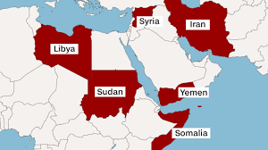
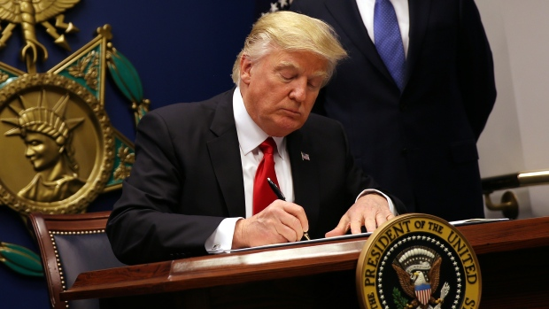

Supreme Court rules to allow limited version of Trump’s travel ban, will reconsider in fall
Alexis Strawn
Travelers from Libya, Iran, Somalia, Sudan, Syria, and Yemen are banned from entering the United States, with limited exceptions. This act brings into question the President’s authority in immigration matters and whether this is a stride to protect America’s borders or an act of religious discrimination.
On Monday, the Supreme Court of the United States ruled to enact a limited travel ban on foreigners from six predominantly Muslim countries: Libya, Iran, Somalia, Sudan, Syria, and Yemen. This is very similar to the January 27 travel ban, except the most recent defines those exempt from the ban, such as “foreign nationals who have a credible claim of a bona fide relationship with a person or entity in the United States”, an employee who has accepted a job in the States, or students admitted to a U.S. university.
This is the high court’s first conviction on the topic, and has been referenced by Trump as “a clear victory for our national security”. So what’s next?

The ban is expected to take place 72 hours following the court’s ruling. This is likely to cause riots and airport chaos, much like the repercussions of Trump’s January travel ban (which was ultimately blocked). Travelers were left stranded at airports or forced to go back to their home countries. To prevent confusion, the Department of Homeland Security released a statement that this travel ban will be discussed with both the Justice and State departments and will be implemented "professionally, with clear and sufficient public notice, particularly to potentially affected travelers, and in coordination with partners in the travel industry."
An aspect of this agreement which will likely cause problems down the road is the lack of a clear definition of a “bona fide relationship” with a person in the United States. This places a burden on executive officials who will have to define such relationships and decide whether certain travelers will be admitted into the country in a neutral manner, despite their own personal beliefs.
The public is generally divided in terms of where to stand with such travel bans. The viewpoints of Americans generally dwindle down to valuing religious freedom and preventing discrimination, or valuing the protection of American borders in regards to terrorist attacks. Many would argue the concept of equalizing terrorism with the Muslim faith is insensitive and unconstitutional, citing the First Amendment (free exercise of religion) as proof. However, the terrorists who attacked America on September 11, 2001 claimed to be Muslim. Where should the line be drawn? More importantly, who should draw it? The ethical and moral implications of these decisions will certainly be felt by generations to come.
The implementation of a new travel ban, much like Executive Order 13769, is a controversial issue concerning whether people from predominantly Muslim countries should have the right to enter the United States despite the possibility of terror attacks. The Supreme Court of the United States will reconvene, discuss the case in full, and make a permanent decision, but for now, the travel ban will be enforced on 6 primarily Muslim nations: Libya, Iran, Somalia, Sudan, Syria, and Yemen, with exceptions.